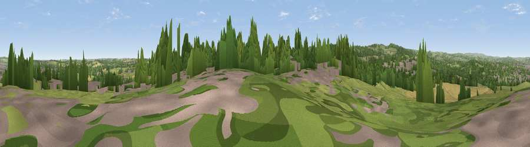

Viewpoint near Wingerworth
#28464 in England · top 44% of its area beats it · near WingerworthThe view, rendered

A 360° render of this exact spot computed from the terrain model, tree cover and land cover — summer colours, afternoon light, calibrated against photographs of famous viewpoints. Real trees, hedges and buildings will differ in detail.
The panorama
Grey silhouette: terrain skyline in each direction (720 bearings, Earth curvature and refraction included). Dashed green: skyline with trees (+15 m) and buildings (+8 m) as obstacles. Blue strip: how far the ground is visible on each bearing.
Where the view opens
Wedge length = distance to the farthest visible ground on that bearing (vegetation-aware). Rings at 10, 25 and 50 km.
What fills the view
37% grassland · 31% woodland · 19% built-up · 13% cropland
Angular shares of the visible panorama (visual magnitude), not map area. Landscape diversity 0.58 (0–1 Shannon).
Key numbers
More beautiful places nearby
The staircase of upgrades: each row has a higher view potential than everything closer. Driving times are estimates from straight-line distance, calibrated against real road routing — check an actual route before setting out.
| Place | Direction | Drive | Score |
|---|---|---|---|
| Viewpoint near Press | SW · 2 km | ~6 min | 54.5 |
| Viewpoint near Alton | SW · 5 km | ~10 min | 67.0 |
| Viewpoint near Alton | SSW · 5 km | ~10 min | 67.7 |
| Viewpoint near Brackenfield | SSW · 9 km | ~17 min | 68.3 |
| Crich Stand | SSW · 13 km | ~24 min | 73.0 |
| Alport Height | SSW · 18 km | ~31 min | 73.9 |
| Tissington Hill | WSW · 27 km | ~44 min | 75.5 |
| Wild Bank | NW · 50 km | ~71 min | 76.2 |
53.20388, -1.42919 · source: screening · position refined by local search. Computed location — check access rights before visiting.